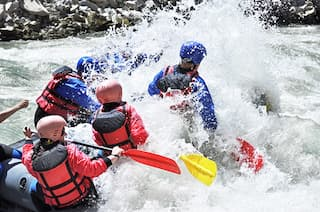

Here at the Existing Expendition, our whitewater rafting trips are design to provide thrill seekers with an unforgettable experience on the water. our expert guides ensure safety while you navigate through stunning landscape and challenging rapids. Oars Up!